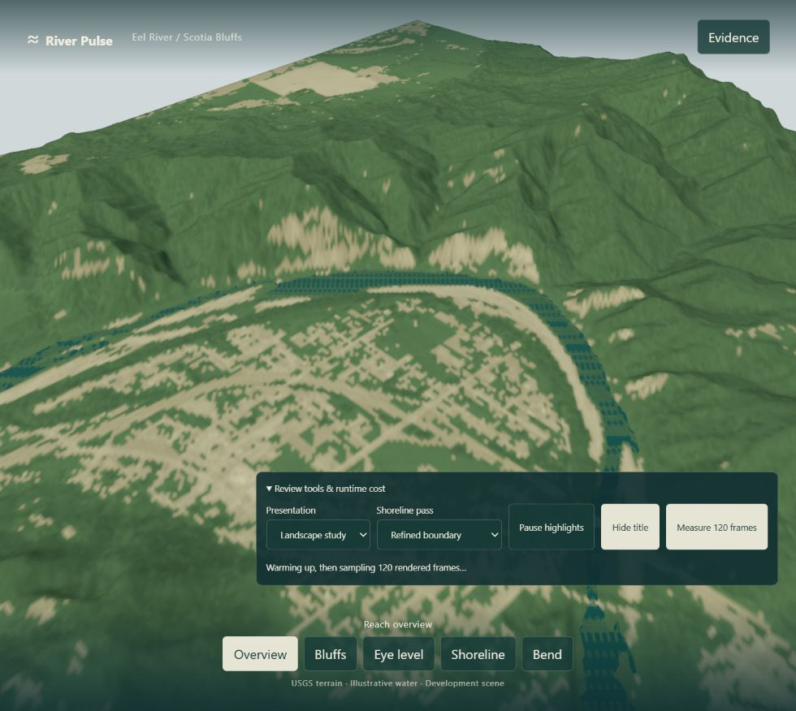
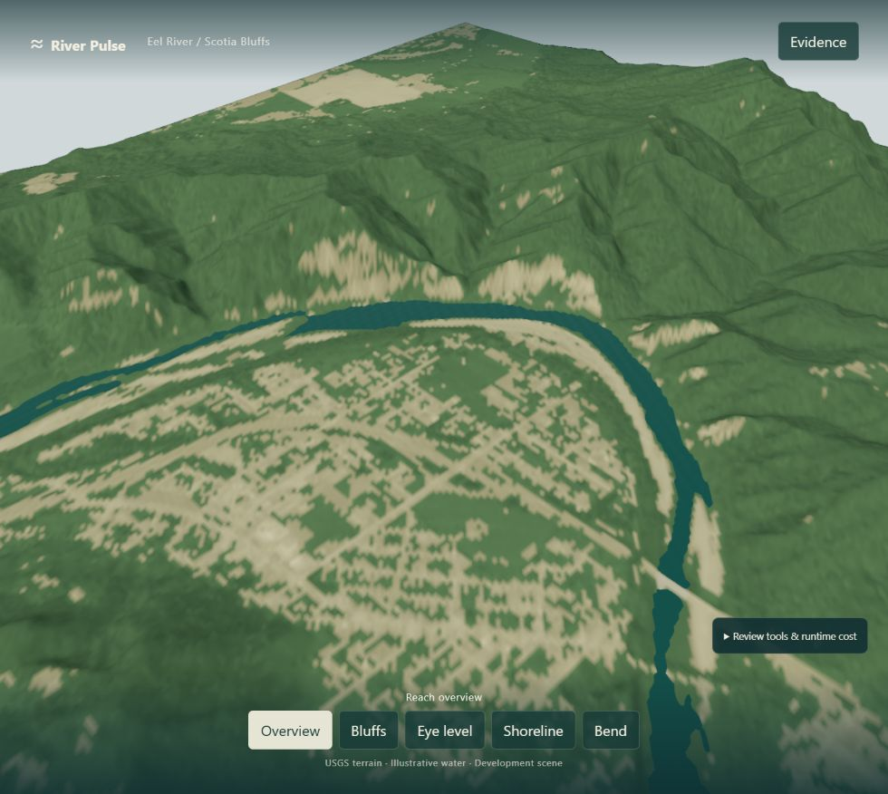
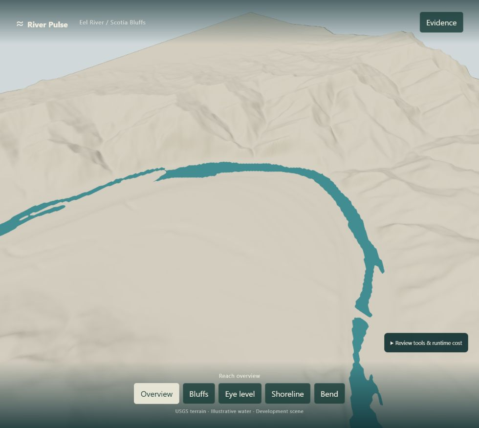
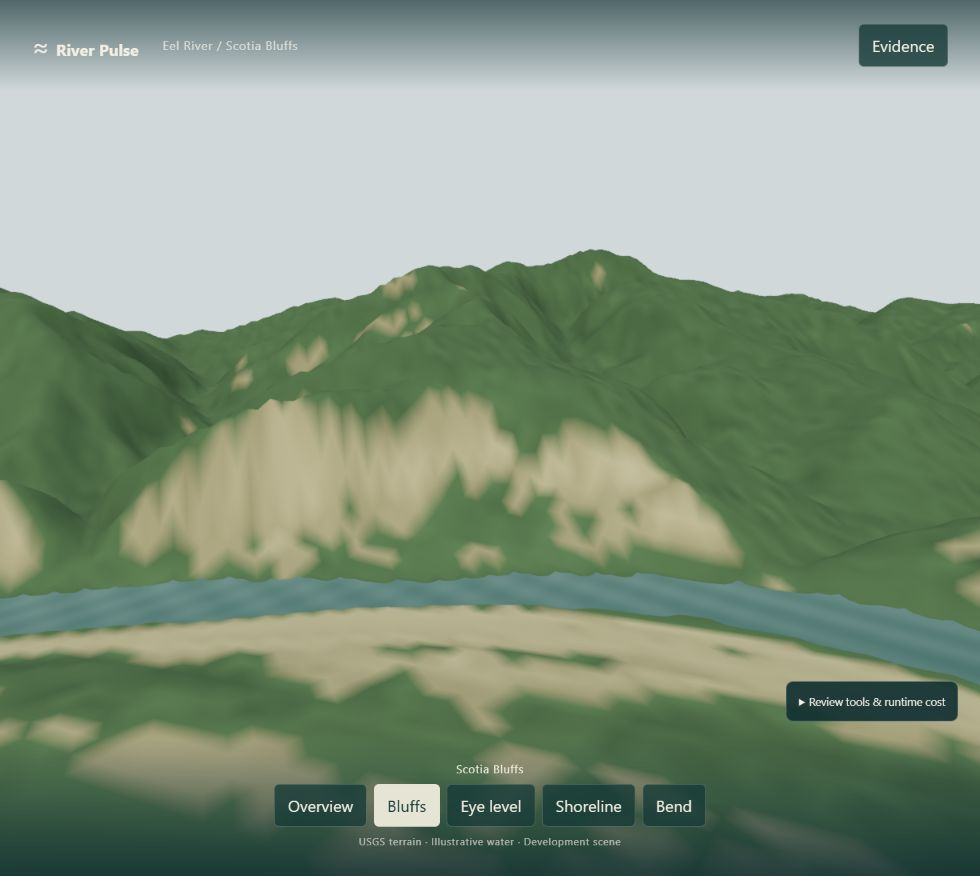
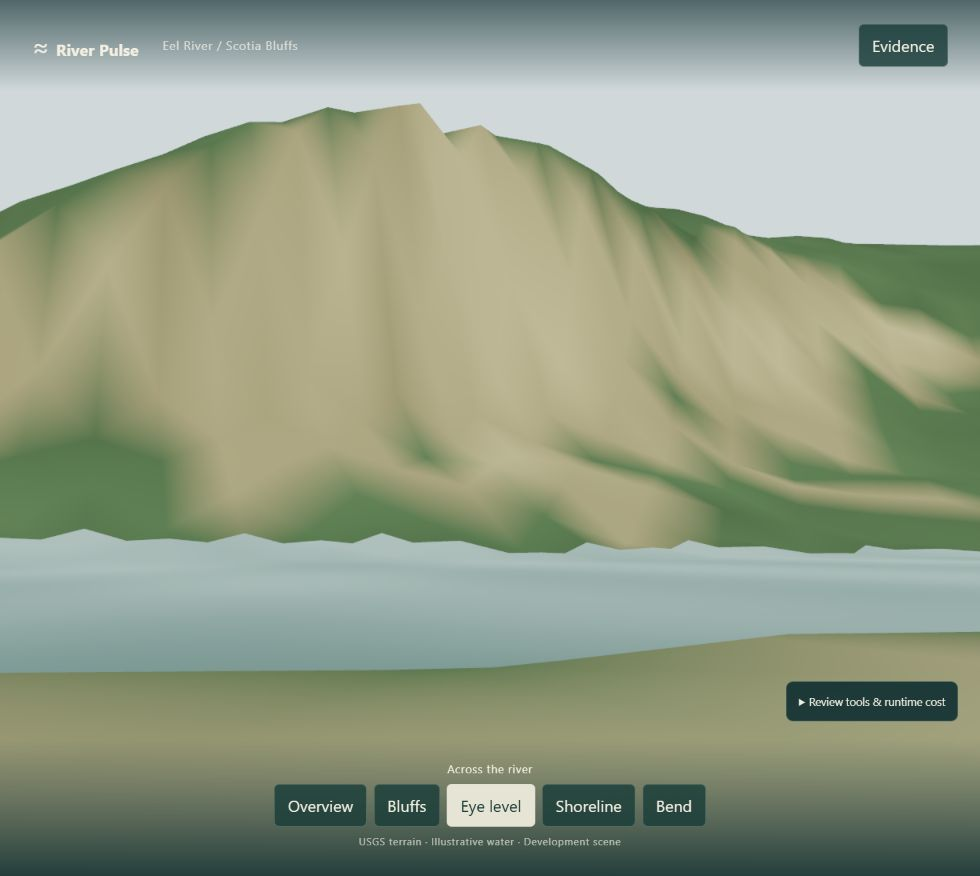
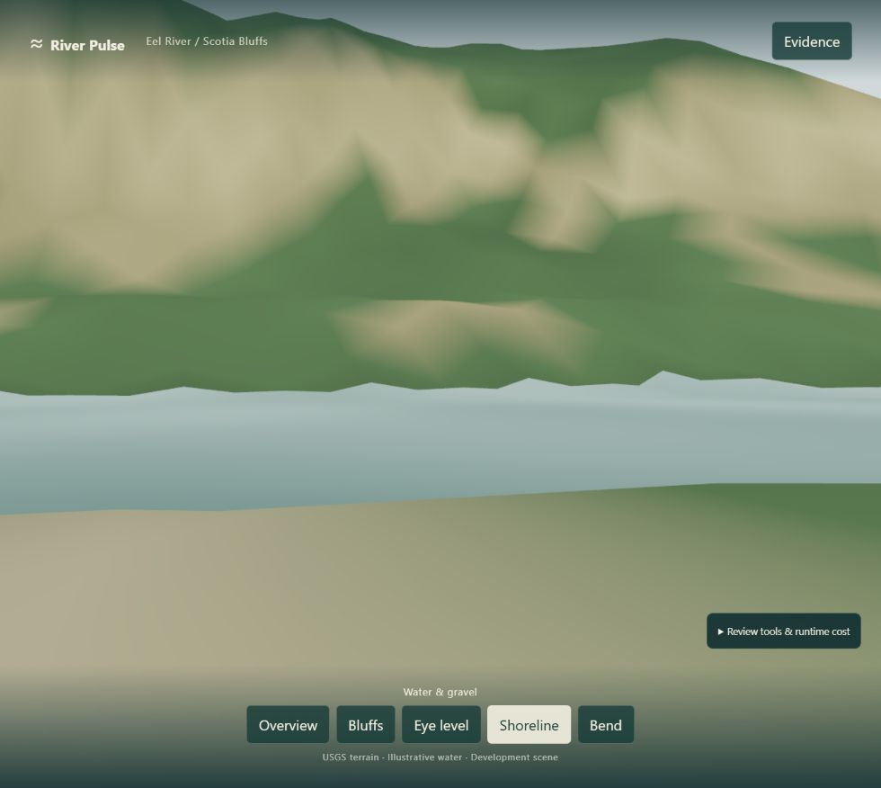
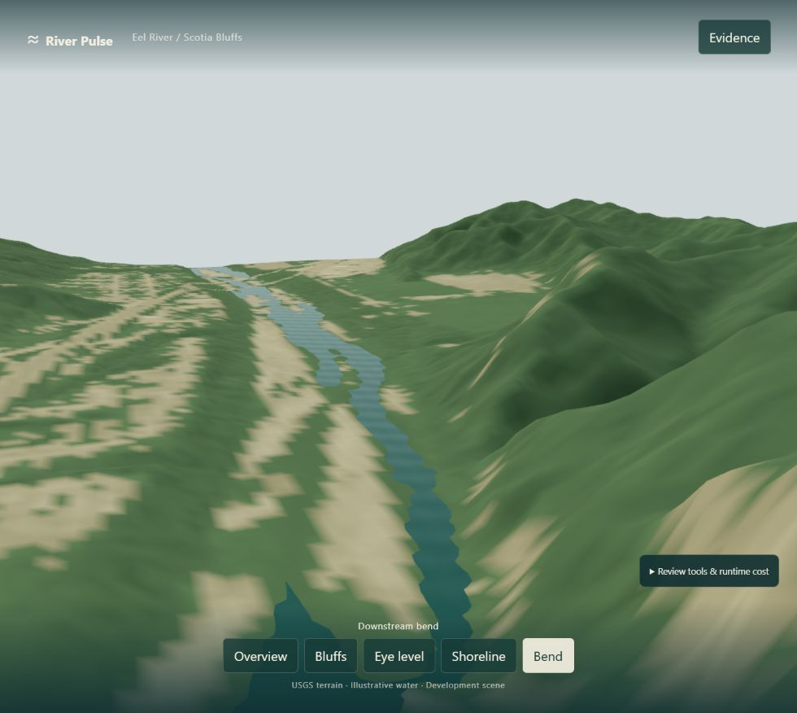
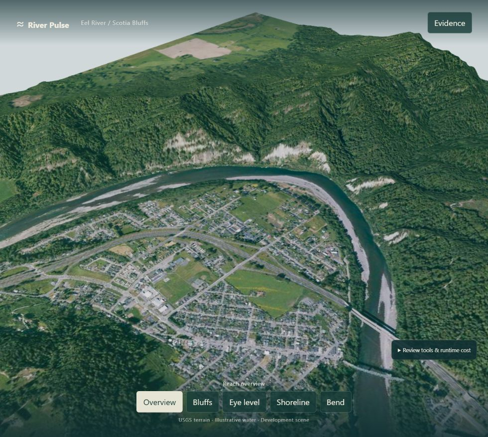

RIVER PULSE / FIELD STUDY 01
Actual browser renders. Native USGS terrain; illustrative water. First form pass, awaiting human acceptance.
Open the interactive study · Review notes and cost record · Reference photograph — Ellin Beltz, CC BY-SA 4.0








The river outline reads more clearly. Low views remain coarse: 14 m terrain, simple cover colors, a DEM-following surface, and no authored trees or structures. Those are next-pass candidates after acceptance.